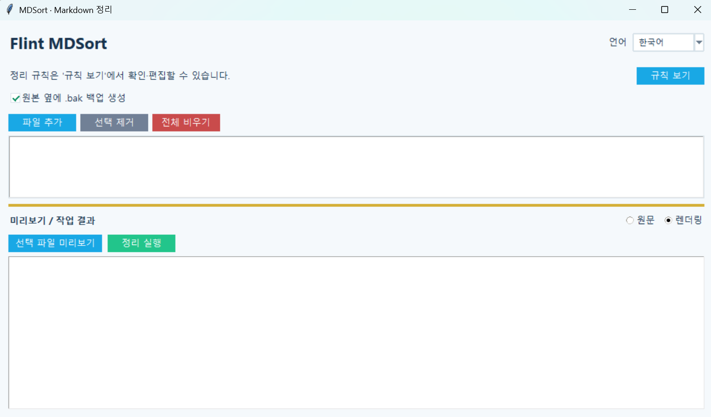

플린트 마크다운 정리기
버전: 1.0.0
Flint MDSort
여러 Markdown 문서의 줄바꿈과 서식을 일정한 규칙으로 정리하는 GUI 및 명령줄 도구입니다. 파일을 실제로 수정하기 전에 정리 결과를 미리 확인할 수 있습니다.
사용 방법
- 프로그램을 실행하고
파일 추가에서 Markdown 문서를 선택합니다. - 파일 목록에서 문서를 선택하면 정리 결과가 자동으로 미리보기에 표시됩니다.
렌더링 보기또는원문 보기로 정리 결과를 확인합니다.- 필요한 경우
규칙 보기에서 정리 규칙을 켜거나 끄고 저장합니다. - 원본 백업 여부를 확인한 다음
정리 실행을 누릅니다.
주요 기능
- 여러 Markdown 파일 추가, 선택 제거 및 전체 비우기
- 일반 문단의 여러 줄을 한 줄로 정리
- 목록의 이어진 줄 정리
**굵은 글씨**와__굵은 글씨__를 백틱으로 변경- 코드 블록, Markdown 표, HTML 블록 보호
- 규칙별 사용 여부 설정 및 저장
flinters공용 Markdown 렌더러를 이용한 미리보기와 원문 보기 전환- 파일 목록 선택 시 미리보기 자동 갱신
- 파일 목록과 미리보기 높이를 조절하는 수평 드래거
- 필요할 때만 표시되는 자동 숨김 스크롤바
- 원본 옆에
.bak백업 생성 옵션 - 한국어 / 영어 UI 및 창 크기·위치 복원
- GUI와 명령줄 실행 지원
실행
GUI 실행:
python mdsort.py파일을 지정하면 명령줄 모드로 정리합니다.
python mdsort.py README.md
python mdsort.py first.md second.md third.md명령줄 옵션:
python mdsort.py README.md --no-backup
python mdsort.py README.md --stdout
python mdsort.py README.md --check--no-backup:.bak백업 없이 수정--stdout: 원본을 수정하지 않고 정리 결과 출력 (파일 하나만 지정)--check: 파일 수정 없이 변경 필요 여부 확인